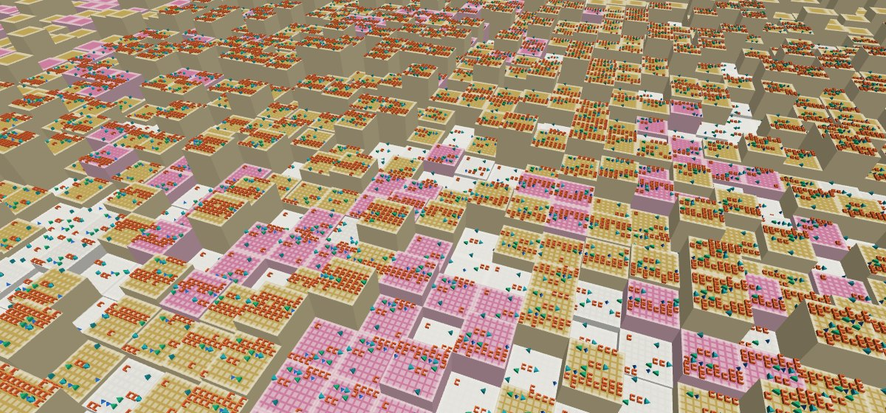
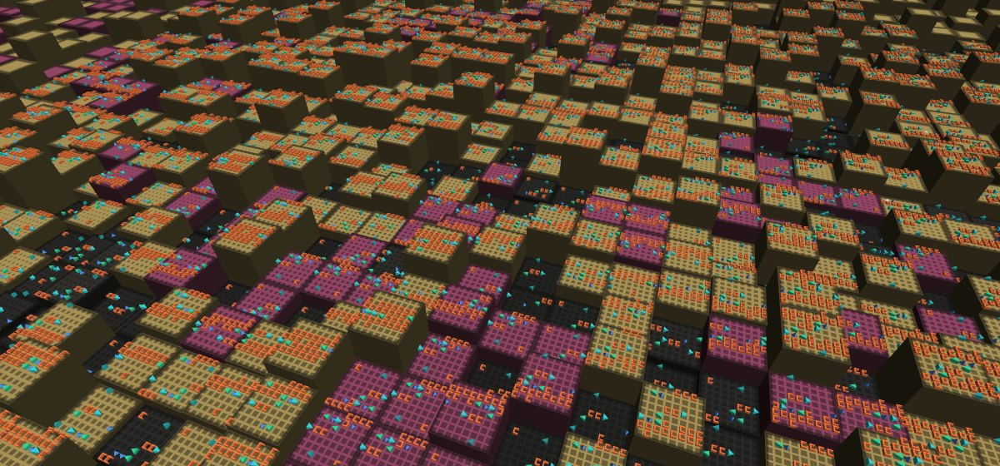
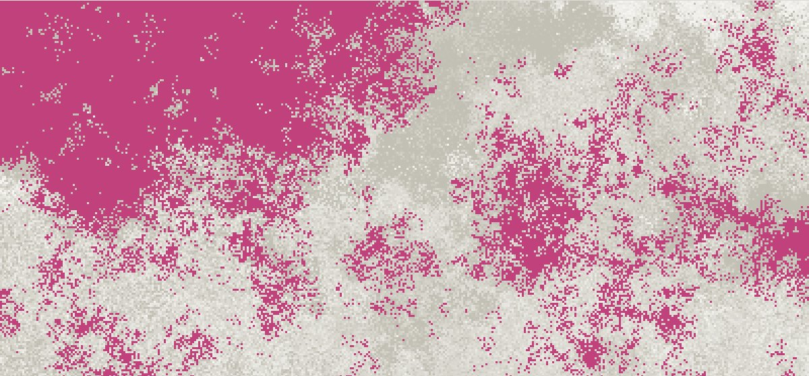
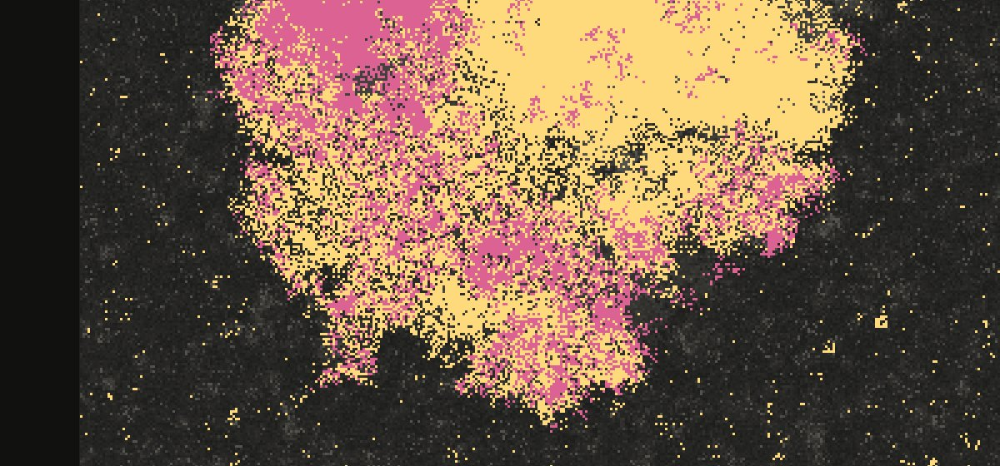

Un experiment d’abiogènesi digitalA digital abiogenesis experiment
La vida, sense que ningú l’escriguiLife, without anyone writing it
Un univers de joguina on intentem que la vida sorgeixi sola. Programes aleatoris es troben, es reescriuen i, de vegades, en surt un que es copia. Dissenyem les lleis del món, mai els organismes.
A toy universe where we try to let life arise on its own. Random programs meet and rewrite each other and, sometimes, one appears that copies itself. We design the laws of the world, never the organisms.
- 131.072
- programes en una sopaprograms in a soup
- 64 B
- cada programaeach program
- 128 B
- la cinta: dos programes juntsthe tape: two programs together
- 10
- instruccions; qualsevol altre byte és una dadainstructions; any other byte is data
Què vol dir “vida” aquíWhat “life” means here
És un criteri de treball, no cap afirmació sobre la vida biològica.It is an operational criterion, not a claim about biological life.
Un replicador hereditariA heritable replicator
és un programa que es copia en un company, i la còpia també es copia.is a program that copies itself into a partner, and whose copy copies itself in turn.
La vida s’ha establertLife is established
quan, en dos censos seguits (un cada 250 èpoques), almenys l’1 % d’una mostra de 2.048 cel·les en són.when at least 1 % of a sample of 2,048 cells are heritable replicators, in two consecutive censuses taken 250 epochs apart.
Què ésWhat it is
Tierra (1991) i Avida (1994) van estudiar l’evolució digital, però hi començava un organisme escrit a mà. La idea que la vida aparegui sola en una «química» de programes ve de lluny: Coreworld, AlChemy o Amoeba. El 2024, Computational Life (Agüera y Arcas i altres) va mostrar que en una sopa de programes molt senzills, en llenguatge BFF, hi apareixen replicadors sols: en un 40 % de les sopes, en 16.000 èpoques. Aquest projecte parteix d’aquí i es pregunta el que queda obert:
Tierra (1991) and Avida (1994) studied digital evolution, but they started from a hand-written organism. The idea that life can arise on its own in a “chemistry” of programs is older: Coreworld, AlChemy and Amoeba. In 2024, Computational Life (Agüera y Arcas et al.) showed that replicators appear on their own in a soup of very simple programs written in the BFF language: in about 40 % of the soups, within 16,000 epochs. This project starts from there and asks what remains open:
- 1
Quines propietats de la química i de l’entorn calen perquè hi aparegui la vida.Which properties of the chemistry and of the environment are needed for life to appear.
- 2
De què depèn que s’estableixi i que duri.What makes it become established, and last.
- 3
Si després hi ha evolució darwiniana sostinguda.Whether sustained Darwinian evolution follows.
- 4
Si els resultats són generals o propis d’aquest llenguatge.Whether the results are general or specific to this language.
La regla principal: dissenyem les lleis, mai els organismes. No hi ha replicadors inicials, ni premis per copiar-se, ni cap instrucció que copiï un programa sencer d’un sol cop. Els organismes són bytes executats pel nostre intèrpret, en un univers tancat: sense accés al sistema, a la xarxa ni als fitxers.
The main rule: we design the laws, never the organisms. There are no seeded replicators, no rewards for copying, and no instruction that copies a whole program at once. The organisms are bytes run by our interpreter, in a closed universe: no access to the system, the network or the files.
La química: 10 instruccionsThe chemistry: 10 instructions
Cada programa són 64 bytes. Dos programes es posen l’un al costat de l’altre en una cinta de 128 bytes, i la cinta s’executa: el codi i les dades hi viuen junts, de manera que un programa es pot reescriure a si mateix i també el seu veí. Hi ha dos caps que llegeixen i escriuen. Qualsevol altre byte no fa res: són dades.
Each program is 64 bytes. Two programs are placed side by side on a 128-byte tape, and the tape is run: code and data live together, so a program can rewrite itself and its neighbour. Two heads read and write. Any other byte does nothing: it is data.
A · la cel·la (410, 155), de la família 1cell (410, 155), of family 10–63
B · la cel·la (412, 156), sense famíliacell (412, 156), with no family64–127
- la instrucció que s’executathe instruction being run
- cap 0head 0
- cap 1head 1
- els bytes d’A, la família 1A’s bytes, family 1
A l’explorador, cada instrucció és un sòlid diferent.In the explorer, each instruction is a different solid.


Explorador 3D
Un món digital on la vida sorgeix sola, en 3D: les famílies de replicadors i el codi de cada cel·la.A digital world where life arises on its own, in 3D: the families of replicators and the code of each cell.


Vista 2D
Un món digital on la vida sorgeix sola, vist des de dalt: del món sencer fins als bytes de cada programa.A digital world where life arises on its own, seen from above: from the whole world down to the bytes of each program.
Què hem trobatWhat we have found
-
Entrades 1 i 2 del quadernNotebook entries 1 and 2 (in Catalan)
La sopa cobra vidaThe soup comes alive
Hem reproduït el resultat de 2024 en sopes de 131.072 programes, i n’hem seguit la història. Els primers replicadors s’enverinen: cada còpia deixa zeros, i els zeros aturen les còpies, com ja descrivia l’article. En una sopa, un successor els converteix en 255 i s’hi continua copiant.
We reproduced the 2024 result in soups of 131,072 programs, and followed their history. The first replicators poison themselves: each copy leaves zeros behind, and zeros stop copying, as the paper already described. In one soup, a successor turns them into 255 and keeps copying.
-
Entrada 8Entry 8 (in Catalan)
Un corrent feble: no concloentA weak current: inconclusive
En un món 2D, cada programa només es troba amb els veïns. En 160 mons, la vida s’hi va establir en el 30 % dels quiets (24 de 80) i en el 42,5 % dels que tenen un corrent feble (34 de 80). La diferència no arriba al límit preregistrat: no permet afirmar cap efecte del corrent, però tampoc no el descarta.
In a 2D world, each program only meets its neighbours. In 160 worlds, life became established in 30 % of the quiet ones (24 of 80) and in 42.5 % of those with a weak current (34 of 80). The difference does not reach the preregistered bound: it does not show an effect of the current, nor does it rule one out.
-
Entrada 10Entry 10 (in Catalan)
La vida establerta duraEstablished life lasts
Continuant 29 mons des de l’establiment, 116 branques de 5.000 èpoques: en el seu món, el 93,1 % de les branques no tenen cap pèrdua sostinguda. Amb corrent, durant les primeres 2.000 èpoques la vida ocupa de mitjana més part del món (22 de 29 mons), com s’espera dels fronts d’invasió. Que la vida duri menys quan el món canvia de condició: no concloent.
Continuing 29 worlds from the establishment, 116 branches of 5,000 epochs: in their own world, 93.1 % of the branches show no sustained loss. With a current, life fills on average a larger share of the world during the first 2,000 epochs (22 of 29 worlds), as invasion-front theory predicts. Whether life lasts less when the world changes condition: inconclusive.
-
Entrada 13Entry 13 (in Catalan)
Els zeros enverinen, en aquests 8 monsZeros poison, in these 8 worlds
En 8 mons on la vida baixa just després d’establir-se, treure els zeros de les cel·les que no es repliquen fa que la vida baixi menys que amb un placebo: confirmat als 8 mons. Contra el món sense tocar, no concloent. No diu res de mons nous.
In 8 worlds where life drops right after becoming established, removing the zeros of the cells that do not replicate makes life drop less than with a placebo: confirmed in all 8 worlds. Against the untouched world, inconclusive. It says nothing about new worlds.
-
El pilot: entrada 12The pilot: entry 12 (in Catalan)
La maduració de la sopaThe maturation of the soup
Una sopa vella fa néixer la vida més sovint que una de nova? Una sèrie preregistrada amb 150 mons nous, que continuen la sopa envellida, en barregen els bytes o la canvien per una de nova. Els resultats, quan s’hagi decidit.
Does an aged soup give rise to life more often than a fresh one? A preregistered series with 150 new worlds that continue the aged soup, shuffle its bytes, or replace it with a fresh one. Results once it has been decided.
Com es treballaHow we work
PreregistrePreregistration
Cada sèrie confirmatòria té un protocol escrit abans de començar, fixat en una etiqueta de git; les de B2 i dels zeros, a més, amb un segell ancorat a Bitcoin. El programa que decideix només ho fa des d’una còpia idèntica a l’etiqueta.
Each confirmatory series has a protocol written before it starts, fixed in a git tag; those of B2 and of the zeros also carry a stamp anchored on Bitcoin. The program that decides only runs from a copy identical to the tag.
Dos auditors d’IATwo AI auditors
A cada iteració, dos models revisen el codi, els mètodes i els resultats, per separat: una altra instància de Claude i un model diferent. No és cap revisió per experts humans.
At each iteration, two models review the code, methods and results separately: another instance of Claude and a different model. This is not human peer review.
Reproduïble i honestReproducible and honest
La història de cada món es pot reproduir exactament amb el mateix commit i la mateixa llavor. Les errades es corregeixen al quadern sense esborrar el que vam dir.
The history of every world can be reproduced exactly with the same commit and seed. Mistakes are corrected in the notebook without erasing what we said.
Estat i límitsStatus and limits
És un projecte personal en curs, començat el 14 d’octubre de 2026. Ho desenvolupa Claude (Anthropic), amb un responsable humà que decideix la direcció i revisa cada canvi del simulador. Els resultats són preliminars, i no s’han publicat ni els han revisat experts humans.
This is a personal project in progress, started on 14 October 2026. It is developed by Claude (Anthropic), with a human owner who sets the direction and reviews every change to the simulator. The results are preliminary, and have not been published or reviewed by human experts.